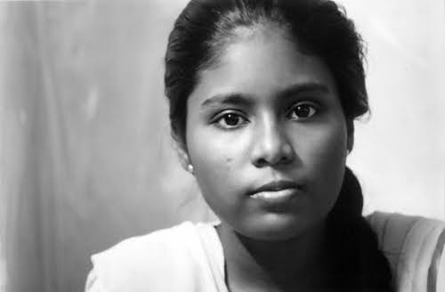
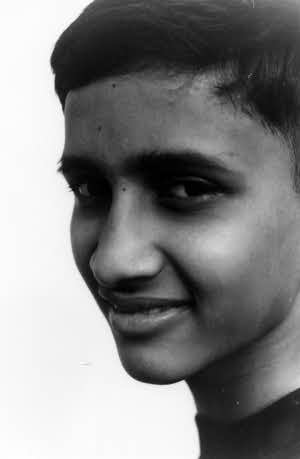
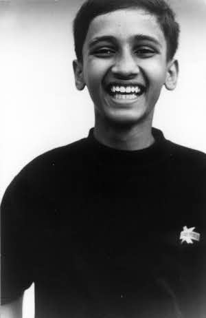
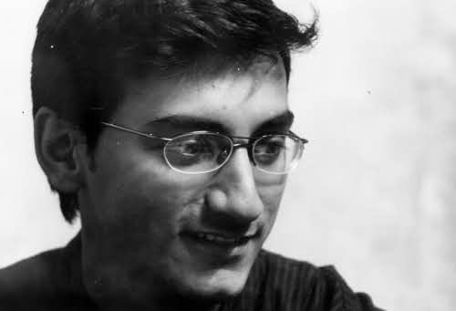
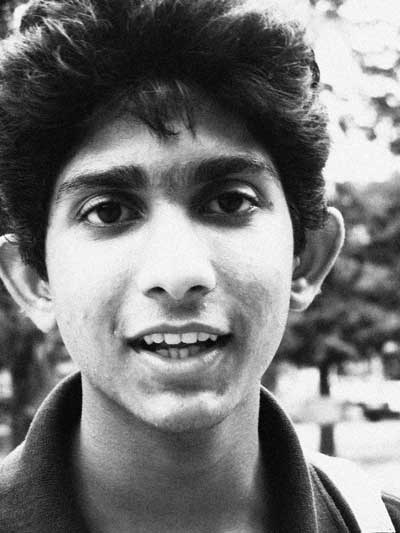

Photographer : Abhijit RaoUnmesh, Aniketh's older brother. He was extremely shy. The DoF turned out to be pretty shallow. I had to shoot many times to get him.
Camera : Dynax 5
Lens : 50 f:1.4
Film : Kodak T400CN @1600ASA
Aperture : 2
Shutter : ?
Photographer : Abhijit RaoOn my brother's birthday. The girl is my neighbour's kid. Lighting is from a lone flourecent tubelight top lefthand side. Camera on Himanshu's broken tripod. |
 |
|  |
Photographer : Abhijit RaoAniket, my young cousin. On the terrece. Light comes from the evening sun. Background is a white wall. |
Photographer : Abhijit RaoAniket again. I troubled him for 10 minutes to give me a natural smile. He is kinda camera shy. |
 |
|
Photographer : Abhijit RaoUnmesh, Aniketh's older brother. He was extremely shy. The DoF turned out to be pretty shallow. I had to shoot many times to get him. |
Photographer : Abhijit RaoShadab, my brother's friend. Inside my room. Light from lone tube light. |
 |
|  |
Photographer : Abhijit RaoThe kid from my building. Just a very random shot. |